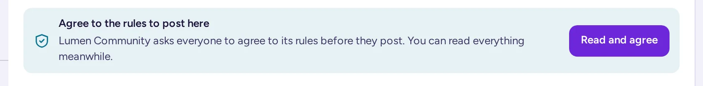
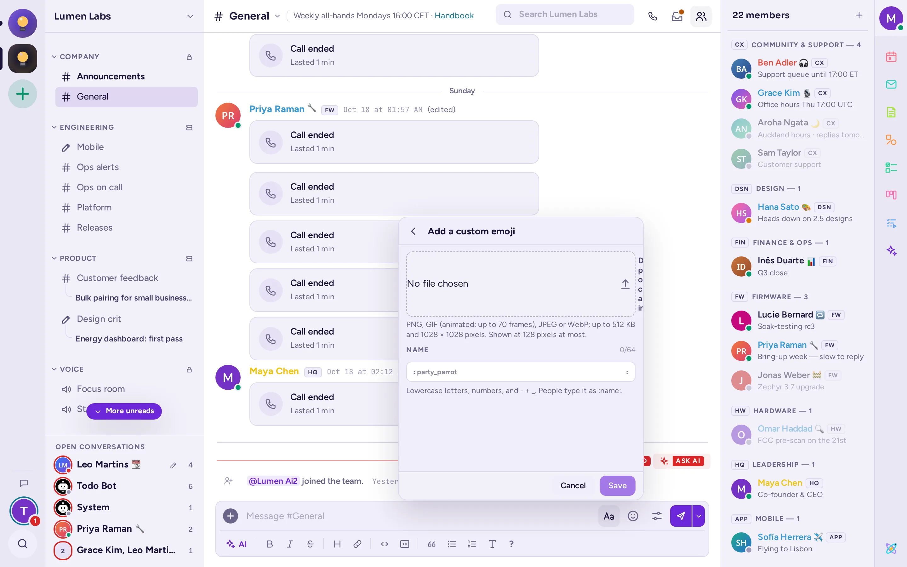
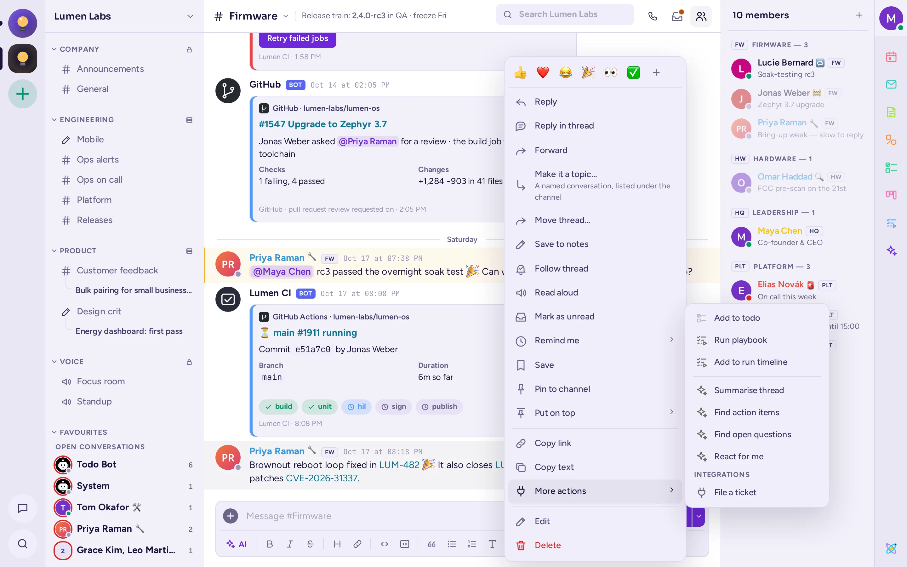

Σύνταξη μηνυμάτων
Όλα σχετικά με τα μηνύματα: σύνταξη και μορφοποίηση, απάντηση, αντίδραση, επεξεργασία, προγραμματισμός και παρακολούθηση των σημαντικών.
Αποστολή μηνύματος
Το πεδίο μηνύματος βρίσκεται στο κάτω μέρος κάθε καναλιού και συνομιλίας. Εμφανίζει το όνομα του χώρου στον οποίο γράφετε, για παράδειγμα «Μήνυμα στο #general».
- Κάντε κλικ στο πεδίο μηνύματος ή πατήστε Ctrl+Shift+L (⌘+Shift+L σε Mac) για να μεταβείτε σε αυτό.
- Πληκτρολογήστε το μήνυμά σας.
- Πατήστε Enter ή κάντε κλικ στο κουμπί Αποστολή (το χαρτί αεροπλάνο).
Για να ξεκινήσετε νέα γραμμή χωρίς να στείλετε, πατήστε Shift+Enter. Αν προτιμάτε το Enter για νέα γραμμή, ενεργοποιήστε το Αποστολή με Ctrl+Enter στις Ρυθμίσεις › Μηνύματα: τότε στέλνετε με Ctrl+Enter (⌘+Enter σε Mac).
Ενώ πληκτρολογείτε, οι χρήστες της συζήτησης βλέπουν «… πληκτρολογεί…» κάτω από το πεδίο μηνύματος. Μπορείτε να σταματήσετε την αποστολή αυτής της ένδειξης με την επιλογή Να μην αποστέλλονται ενδείξεις πληκτρολόγησης στις Ρυθμίσεις › Προχωρημένες.
Ένα μήνυμα που δεν στάλθηκε παραμένει στη συζήτηση, γκριζαρισμένο και με την ένδειξη Δεν στάλθηκε. Κάντε κλικ στο Νέα απόπειρα για να το στείλετε ξανά ή στο Απόρριψη για να το αφαιρέσετε.
Αποδοχή των κανόνων μιας κοινότητας
Ορισμένες κοινότητες ζητούν από όλους να συμφωνήσουν στους κανόνες τους πριν αναρτήσουν στα κανάλια τους. Όταν ανοίγετε μια τέτοια κοινότητα, εμφανίζεται ένα παράθυρο διαλόγου Κανόνες του …: διαβάστε τους και κάντε κλικ στο Συμφωνώ. Αν επιλέξετε Όχι τώρα, μπορείτε να συνεχίσετε να διαβάζετε τα πάντα, αλλά το πλαίσιο μηνυμάτων των καναλιών της κοινότητας αντικαθίσταται από το μήνυμα «Αποδεχτείτε τους κανόνες για να αναρτήσετε εδώ», με το κουμπί Διαβάστε και συμφωνήστε. Όταν οι διαχειριστές της κοινότητας αλλάξουν τους κανόνες και ζητήσουν από όλους να συμφωνήσουν εκ νέου, το παράθυρο διαλόγου εμφανίζεται ξανά. Τα άμεσα και τα ομαδικά μηνύματα δεν επηρεάζονται ποτέ.

Στην εφαρμογή για κινητά και στη κλασική διεπαφή, πληκτρολογήστε /rules σε ένα από τα κανάλια της κοινότητας για να διαβάσετε τους κανόνες, στη συνέχεια /rules agree για να τους αποδεχτείτε.
Κανάλια όπου αναρτούν μόνο οι συντονιστές
Σε ένα κανάλι κειμένου ή φωνής που έχει ρυθμιστεί έτσι ώστε μόνο οι συντονιστές να ξεκινούν συνομιλίες, το πλαίσιο μηνυμάτων αντικαθίσταται από το μήνυμα «Μόνο οι συντονιστές αναρτούν εδώ. Απαντήστε σε ένα νήμα.» αν δεν είστε συντονιστής. Σε ένα φόρουμ με την ίδια ρύθμιση, το κουμπί «Νέο θέμα» και τα άλλα κουμπιά που ανοίγουν ένα θέμα είναι κρυφά, και η μία γραμμή ειδοποίησης αναφέρει «Μόνο οι συντονιστές ανοίγουν θέματα εδώ. Απαντήστε σε ένα νήμα.» αντί για αυτό. Μπορείτε ακόμα να απαντήσετε σε υπάρχοντα νήματα ή θέματα (δείτε Η καρτέλα Τύπος).
Μορφοποίηση κειμένου
Το Antimatter μορφοποιεί τα μηνύματα με Markdown: μερικά σύμβολα γύρω από ή μπροστά από το κείμενο αλλάζουν την εμφάνισή του. Δεν χρειάζεται να τα μάθετε: η μπάρα μορφοποίησης το κάνει για εσάς.
Χρήση της μπάρας μορφοποίησης
- Αν η μπάρα μορφοποίησης κάτω από το πεδίο μηνύματος είναι κρυφή, κάντε κλικ στο Εμφάνιση μορφοποίησης (το κουμπί Aa στο πεδίο μηνύματος).
- Επιλέξτε κάποιο κείμενο και κάντε κλικ σε ένα κουμπί: έντονη, πλάγια, διαγραφή, Κεφαλίδα, Σύνδεσμος, κώδικας εντός κειμένου, Μπλοκ κώδικα, επιφώνηση, κατάλογος με κουκκίδες ή αριθμημένη λίστα.
- Όταν το παράθυρο είναι στενό, ορισμένα κουμπιά μετακινούνται στο Περισσότερες επιλογές μορφοποίησης (το κουμπί ⋯).
Για να ελέγξετε πώς θα εμφανίζεται ένα μήνυμα πριν το στείλετε, κάντε κλικ στο Δείτε πώς θα εμφανίζεται το μήνυμα στη γραμμή μορφοποίησης ή πατήστε Ctrl+Alt+P (⌘+⌥+P σε Mac). Το κουμπί ? ανοίγει τις σελίδες βοήθειας για μορφοποίηση, αναφορές, αρχεία και εντολές.
Αν προτιμάτε να βλέπετε την έντονη γραφή, τις λίστες και τους συνδέσμους όπως θα εμφανίζονται κατά τη συγγραφή, ενεργοποιήστε τον Επεξεργαστή πλούσιου κειμένου (beta) στις Ρυθμίσεις › Μηνύματα, όταν ο διακομιστής σας το προσφέρει. Με τον κέρσορα μέσα σε μια λέξη, ένα κουμπί μορφοποίησης εκεί διαμορφώνει ολόκληρη τη λέξη χωρίς να χρειάζεται να την επιλέξετε πρώτα. Η επικόλληση ενός αρχείου το επισυνάπτει, όπως στο απλό πλαίσιο μηνυμάτων, αντί να γράφει το όνομα του αρχείου μέσα στο μήνυμα.
Markdown που μπορείτε να πληκτρολογήσετε
| Πληκτρολογείτε | Παίρνετε |
|---|---|
**bold** | έντονη |
*italic* ή _italic_ | πλάγια |
~~struck~~ | διαγραμμένο κείμενο |
`code` | code σε γραμματοσειρά σταθερού πλάτους |
``` στις γραμμές πριν και μετά από έναν κώδικα | μπλοκ κώδικα. Προσθέστε μια γλώσσα μετά το πρώτο ```, όπως ```python, για να τον χρωματίσετε |
[text](https://example.com) | σύνδεσμος που εμφανίζει «κείμενο» |
# , ## ή ### στην αρχή μιας γραμμής | κεφαλίδα, από τη μεγαλύτερη προς τη μικρότερη |
-# στην αρχή μιας γραμμής | μικρό, σμυρδισμένο κείμενο (υποκείμενο) |
> στην αρχή μιας γραμμής | παραθέση |
- ή * στην αρχή γραμμών | λίστα με κουκκίδες. Εσοχή δύο διαστήματα για υποστοιχεία |
1. στην αρχή γραμμών | αριθμημένη λίστα |
- [ ] και - [x] | λίστα εργασιών με άδειο και επιλεγμένο πλαίσιο |
--- σε ξεχωριστή γραμμή | οριζόντια γραμμή |
γραμμή κεφαλίδας, γραμμή με --- χωρισμένη από |, και στη συνέχεια γραμμές χωρισμένες από | | πίνακας |
Εάν ο διαχειριστής σας το έχει ενεργοποιήσει, μπορείτε επίσης να γράφετε μαθηματικά με LaTeX, σε μπλοκ κώδικα ```latex.
Για να βλέπετε τα μηνύματα ως απλό κείμενο, χωρίς μορφοποίηση, απενεργοποιήστε το Μορφοποίηση μηνυμάτων στις Ρυθμίσεις › Μηνύματα.
Ώρες που όλοι τις διαβάζουν στη δική τους ζώνη ώρας
Όταν ένα μήνυμα αναφέρει μια ώρα, όπως «15:30 CET» ή «3 το απόγευμα αύριο», το Antimatter την τονίζει με ένα μικρό ρολόι. Κάντε κλικ σε αυτήν για να δείτε την ώρα στη δική σας ζώνη ώρας. Μπορείτε να απενεργοποιήσετε αυτήν τη λειτουργία με την επιλογή Ώρες στη ζώνη ώρας σας στις Ρυθμίσεις › Μηνύματα.

Μπορείτε επίσης να γράφετε μια ακριβή στιγμή, η οποία εμφανίζεται σε κάθε αναγνώστη με τη δική του ζώνη ώρας και μορφή: πληκτρολογήστε <t:1700000000>, όπου ο αριθμός είναι ένα Unix timestamp (ο αριθμός των δευτερολέπτων από την 1η Ιανουαρίου 1970, UTC). Προσθέστε ένα γράμμα μετά από двоєтіє (colon) για να επιλέξετε το στυλ: t σύντομη ώρα, T πλήρης ώρα, d σύντομη ημερομηνία, D πλήρης ημερομηνία, f ημερομηνία και ώρα (η προεπιλογή), F ημερομηνία και ώρα με την ημέρα της εβδομάδας, R σχετικός χρόνος, όπως «σε 3 ώρες». Για παράδειγμα, <t:1700000000:R>.
Αναφορά σε άτομα και κανάλια
Μια αναφορά ειδοποιεί κάποιον, ακόμα κι αν δεν παρακολουθεί στενά τη συζήτηση.
- Πληκτρολογήστε
@και την αρχή ενός ονόματος, και στη συνέχεια επιλέξτε το άτομο από τη λίστα με τα βέλη και Tab ή Enter. Θα λάβει μια ειδοποίηση. - Τα
@channelκαι@allειδοποιούν όλους στο κανάλι· το@hereειδοποιεί μόνο όσους από αυτούς είναι σε σύνδεση. Όταν ένα κανάλι έχει περισσότερα από λίγα μέλη, το Antimatter σας ζητά πρώτα επιβεβαίωση και σας αναφέρει πόσα άτομα και σε ποιες ζώνες ώρας πρόκειται να ειδοποιήσετε. - Πληκτρολογήστε
#και την αρχή του ονόματος ενός καναλιού, και επιλέξτε το κανάλι για να δημιουργήσετε έναν σύνδεσμο προς αυτό: το μήνυμα εμφανίζει#channel-nameως σύνδεσμο. Το~ανοίγει την ίδια λίστα. Ένα#ακολουθούμενο από κενό ξεκινά μια κεφαλίδα, ενώ ένα#wordπου δεν αντιστοιχεί σε κανάλι της κοινότητας παραμένει hashtag. - Η κοινότητά σας μπορεί επίσης να διαθέτει ομάδες που μπορείτε να αναφέρετε με μία κίνηση· εμφανίζονται στη λίστα μαζί με τα άτομα όταν πληκτρολογείτε
@.
Οι αναφορές που προσθέτετε όταν επεξεργάζεστε ένα μήνυμα δεν ειδοποιούν κανέναν.
Για να αναφέρετε κάποιον από το προφίλ του, κάντε δεξί κλικ στο όνομα ή στη φωτογραφία του και επιλέξτε Αναφορά.
Emoji και αντιδράσεις
Προσθήκη emoji σε μήνυμα
- Κάντε κλικ στο Emoji (το χαμογελαστό πρόσωπο στο πεδίο μηνύματος) ή πατήστε Ctrl+Alt+E (⌘+⌥+E σε Mac). Αναζητήστε ή περιηγηθείτε στις κατηγορίες και κάντε κλικ σε ένα emoji. Ο επιλογέας παραμένει ανοιχτός ώστε να μπορείτε να προσθέσετε περισσότερα.
- Ή πληκτρολογήστε
:και την αρχή του ονόματος ενός emoji, όπως:thumb, και επιλέξτε το από τη λίστα. - Επιλέξτε τόνο δέρματος με το κουμπί τόνου δέρματος στον επιλογέα. Η επιλογή σας αποθηκεύεται.
- Εξ ορισμού, τα emoticons όπως
:)και<3μετατρέπονται σε emoji. Απενεργοποιήστε αυτή τη λειτουργία από Μετατροπή emoticons σε emoji στις Ρυθμίσεις › Μηνύματα.
Ο επιλογέας διαθέτει επίσης καρτέλες για GIFs και αυτοκόλλητα όταν έχουν εγκατασταθεί οι αντίστοιχες εφαρμογές: δείτε GIFs, αυτοκόλλητα και memes.
Αντίδραση σε μήνυμα
- Κατευθύνετε τον δείκτη στο μήνυμα: εμφανίζεται μια γραμμή εργαλείων στην πάνω δεξιά γωνία του.
- Κάντε κλικ στο Προσθήκη αντίδρασης (το χαμογελαστό πρόσωπο) και επιλέξτε ένα emoji. Το μενού κάτω από Ενέργειες μηνύματος (⋯) προσφέρει επίσης έξι γρήγορες αντιδράσεις.
Οι αντιδράσεις εμφανίζονται κάτω από το μήνυμα με έναν αριθμό. Κάντε κλικ σε μια αντίδραση για να προσθέσετε τη δική σας και κάντε κλικ ξανά για να την αφαιρέσετε. Δείξτε πάνω της για να δείτε ποιοι αντιδράσανε. Για να αντιδράσετε στο τελευταίο μήνυμα μιας συνομιλίας από το πληκτρολόγιο, πατήστε Ctrl+Shift+\ (⌘+Shift+\ σε Mac) στο πεδίο μηνύματος.
Με το Αντιδράσεις με ένα κλικ ενεργοποιημένο στις Ρυθμίσεις › Μηνύματα, το emoji που χρησιμοποιήσατε τελευταία εμφανίζεται στη γραμμή εργαλείων του μηνύματος, ώστε να μπορείτε να αντιδράσετε με ένα κλικ.
Προσθέστε τα δικά σας emoji
Εάν ο διακομιστής σας το επιτρέπει, ο επιλογέας emoji έχει δύο κουμπιά δίπλα στο πεδίο αναζήτησής του: Προσθήκη προσαρμοσμένου emoji (+) και Προσαρμοσμένα emoji. Ανοίγουν την αντίστοιχη προβολή μέσα στον επιλογέα· το Πίσω ή το Esc επιστρέφει στα emoji.
- Κάντε κλικ στο Προσθήκη προσαρμοσμένου emoji.
- Ρίξτε, επικολλήστε ή επιλέξτε μια εικόνα: PNG, GIF (κινητό, έως 70 καρέ), JPEG ή WebP, έως 512 KB και 1028 × 1028 pixels. Ο επιλογέας την εμφανίζει στα μεγέθη μιας αντίδρασης, ενός μηνύματος και του επιλογέα.
- Πληκτρολογήστε το Όνομα: πεζά γράμματα, αριθμοί και
-,+ή_, έως 64 χαρακτήρες. Ο επιλογέας σας ενημερώνει καθώς πληκτρολογείτε αν το όνομα είναι ελεύθερο. - Κάντε κλικ στο Αποθήκευση. Το νέο emoji εμφανίζεται πρώτο στον επιλογέα, κάτω από Μόλις προστέθηκε.
Όλοι στον διακομιστή μπορούν τότε να το χρησιμοποιήσουν ως :name:. Το Προσαρμοσμένα emoji εμφανίζει τα προσαρμοσμένα emoji του διακομιστή, μαζί με τον χρήστη που τα πρόσθεσε και πότε· αναζητήστε τα και διαγράψτε αυτά που έχετε άδεια να διαγράψετε.

Απάντηση σε ένα μήνυμα
Υπάρχουν δύο τρόποι να απαντήσετε σε ένα μήνυμα: μια απάντηση στη συνομιλία, η οποία το παραθέτει, ή μια απάντηση στο νήμα του.
Απάντηση στη συνομιλία
- Κατευθύνετε τον δείκτη στο μήνυμα και κάντε κλικ στο Απάντηση (το καμπυλωτό βέλος), ή επιλέξτε Απάντηση στο μενού Ενέργειες μηνύματος.
- Το πεδίο μηνύματος εμφανίζει «Απάντηση σε» μαζί με το μήνυμα στο οποίο απαντάτε. Εξ ορισμού, ο δημιουργός του ειδοποιείται. Κάντε κλικ στο @ Ενεργό για να το αλλάξετε σε @ Ανενεργό αν δεν θέλετε να τον/την ειδοποιήσετε· το Antimatter θυμάται την επιλογή σας για την επόμενη φορά.
- Γράψτε την απάντησή σας και στείλτε την. Εμφανίζεται στη συνομιλία με το παρατιθέμενο μήνυμα από πάνω της. Κάντε κλικ στο παράθεση για να μεταβείτε στο αρχικό μήνυμα.
Για ακύρωση, κάντε κλικ στο Ακύρωση απάντησης (το ×) ή πατήστε Esc. Σε ένα κενό πεδίο μηνύματος, Shift+Up αναφέρει το τελευταίο μήνυμα, και πατώντας ξανά πηγαίνει πιο πίσω· Shift+Down πηγαίνει ξανά μπροστά.
Ο διαχειριστής σας μπορεί να απενεργοποιήσει αυτές τις απαντήσεις. Τότε προσφέρονται μόνο νήματα.
Απάντηση σε ένα νήμα
Ένα νήμα κρατάει μια παράλληλη συζήτηση μαζί, κάτω από το μήνυμα που το ξεκίνησε, χωρίς να γεμίζει το κανάλι.
- Κατευθύνετε τον δείκτη στο μήνυμα και κάντε κλικ στο Απάντηση στο νήμα, ή επιλέξτε Απάντηση στο νήμα στο μενού Ενέργειες μηνύματος.
- Το νήμα ανοίγει στον πίνακα δεξιά, με το δικό του πεδίο μηνύματος, «Απάντηση σε νήμα». Γράψτε την απάντησή σας και στείλτε την.
Στο κανάλι, ένα μήνυμα με απαντήσεις δείχνει ποιος απάντησε, πόσες απαντήσεις υπάρχουν και πότε ήρθε η τελευταία. Κάντε κλικ σε αυτό για να ανοίξετε το νήμα. Στο πάνελ νήματος μπορείτε να κάνετε κλικ στο Άνοιγμα σε νέο παράθυρο για να το διαβάσετε σε ένα δικό του παράθυρο, ή να σύρετε την άκρη του πάνελ για να το κάνετε πιο φαρδύ. Πατήστε Esc ή κάντε κλικ στο Κλείσιμο νήματος για να το κλείσετε.
Παρακολούθηση νημάτων
Παρακολουθείτε αυτόματα ένα νήμα όταν το ξεκινάτε, απαντάτε σε αυτό ή αναφέρεστε σε αυτό. Όταν παρακολουθείτε ένα νήμα, οι νέες απαντήσεις το καθιστούν μη αναγνωσμένο. Για να παρακολουθήσετε ή να σταματήσετε να παρακολουθείτε ένα νήμα, επιλέξτε Παρακολούθηση νήματος ή Ακύρωση παρακολούθησης νήματος στο μενού Ενέργειες μηνύματος του μηνύματος, ή στο μενού Ενέργειες νήματος του πάνελ νήματος (⋯). Βρείτε όλα τα νήματα που παρακολουθείτε κάτω από Παρακολουθούμενα νήματα: δείτε Αναφορές, αποθηκευμένα και καρφιτσωμένα μηνύματα.
Εξ ορισμού, οι απαντήσεις των νημάτων παραμένουν στο νήμα τους. Αν προτιμάτε να βλέπετε τις απαντήσεις και στο κανάλι, απενεργοποιήστε το Διατήρηση απαντήσεων σε νήματα στις Ρυθμίσεις › Μηνύματα, εφόσον ο διακομιστής σας προσφέρει αυτή την επιλογή.
Δημιουργία θέματος από νήμα
Ένα θέμα είναι μια ονομασμένη συζήτηση μέσα στο κανάλι της: όλοι που το παρακολουθούν το βλέπουν κάτω από το κανάλι στην πλευρική στήλη τους. Μπορείτε να κάνετε ένα νήμα που ξεκινήσατε θέμα.
- Ανοίξτε το μενού Ενέργειες μηνύματος του πρώτου μηνύματος του νήματος και επιλέξτε Δημιουργία θέματος….
- Πληκτρολογήστε ένα Όνομα, όπως «Release 2.1», και κάντε κλικ στο Αποθήκευση.
Για να αλλάξετε το όνομα αργότερα, επιλέξτε Μετονομασία θέματος… από το ίδιο μενού. Αφήστε το πεδίο του ονόματος κενό για να γίνει το νήμα ξανά απλό.
Μετατροπή νήματος σε κανάλι
Όταν ένα νήμα εξελιχθεί σε θέμα με δική του υπόσταση, συνεχίστε σε ένα δικό του κανάλι.
- Στο πάνελ νήματος, ανοίξτε το μενού Ενέργειες νήματος (⋯) και επιλέξτε Δημιουργία καναλιού….
- Ελέγξτε το Όνομα του καναλιού, που προέρχεται από το νήμα, και ενεργοποιήστε το Ιδιωτικό κανάλι αν μόνο τα μέλη του πρέπει να το βλέπουν.
- Αφήστε ενεργοποιημένη την επιλογή Προσθήκη των άλλων ατόμων στο νήμα για να γίνουν μέλη όλοι όσοι έγραψαν σε αυτό.
- Κάντε κλικ στο Δημιουργία καναλιού.
Αν έχετε άδεια να μετακινήσετε το νήμα (βλ. παρακάτω), τα μηνύματά του μεταφέρονται στο νέο κανάλι, μαζί με τους συγγραφείς και τις ώρες τους, και ένα σύνδεσμο προς αυτά παραμένει στη θέση του νήματος. Αλλιώς, οι απαντήσεις παραμένουν στο νήμα: το νέο κανάλι ξεκινά με ένα σύνδεσμο προς το νήμα, και το νήμα αποκτά ένα σύνδεσμο προς το κανάλι. Πρέπει να έχετε άδεια να δημιουργείτε κανάλια.
Μετακίνηση νήματος
Επιλέξτε Μετακίνηση νήματος… στο μενού μηνύματος για να μετακινήσετε ένα ολόκληρο νήμα σε άλλο κανάλι της ίδιας κοινότητας. Μπορείτε να μετακινήσετε τα νήματα που ξεκινήσατε μεταξύ δημόσιων καναλιών, και οπουδήποτε όταν όλα τα μηνύματά τους δικά σας. Οι διαχειριστές του καναλιού, οι διαχειριστές και οι συντονιστές της κοινότητας μπορούν να μετακινήσουν οποιοδήποτε νήμα της κοινότητας. Μια γραμμή σε κάθε κανάλι οδηγεί στην άλλη τοποθεσία, όπως «Ένα νήμα με 13 μηνύματα έχει μετακινηθεί στο #ops»: κάντε κλικ σε αυτήν για να ανοίξει το νήμα εκεί, με έμφαση. Τα νήματα σε αρχειοθετημένα κανάλια, σε άμεσα και ομαδικά μηνύματα, και τα πολύ μεγάλα νήματα δεν μπορούν να μετακινηθούν.
Το μενού μηνύματος
Βάλτε τον δείκτη πάνω σε ένα μήνυμα και κάντε κλικ στο Ενέργειες μηνύματος (⋯) για να ανοίξετε το μενού του. Σε οθόνη αφής, πατήστε και κρατήστε πατημένο το μήνυμα. Ανάλογα με το μήνυμα και με ό,τι σας επιτρέπεται να κάνετε, το μενού προσφέρει:
| Στοιχείο | Λειτουργία |
|---|---|
| Γρήγορες αντιδράσεις, και στη συνέχεια Περισσότερες αντιδράσεις | Αντιδράστε με ένα από έξι συνηθισμένα emoji ή επιλέξτε ένα άλλο. |
| Απάντηση | Παραθέστε το μήνυμα στην απάντησή σας. |
| Απάντηση στο νήμα | Ανοίξτε το νήμα του μηνύματος. |
| Επόμενο | Κοινοποιήστε το μήνυμα σε άλλο κανάλι ή συνομιλία (βλ. παρακάτω). |
| Να γίνει θέμα… / Μετονομασία θέματος… | Μετατρέπει το νήμα σε ονομασμένη συζήτηση του καναλιού (βλ. Μετατροπή νήματος σε θέμα). |
| Μετακίνηση νήματος… | Μετακινεί το ολόκληρο νήμα σε άλλο κανάλι της κοινότητας, εφόσον έχετε άδεια. |
| Αποδοχή απάντησης / Ανάκληση αποδοχής απάντησης | Σε ένα φόρουμ Ε&Α, σημειώστε μια απάντηση ως την αποδεκτή απάντηση της ερώτησης, ή ανακαλέστε την. Εμφανίζεται στον ερωτών και στους συντονιστές (δείτε Ε&Α και Ιδέες). |
| Ορισμός κατάστασης | Σε ένα φόρουμ Ιδεών, ορίστε την κατάσταση ενός θέματος: Άνοιγμα, Προγραμματισμένο, Σε εξέλιξη, Ολοκλήρωση ή Απορρίφθηκε. Μόνο για συντονιστές. |
| Αποθήκευση στις σημειώσεις | Αντιγραφή του μηνύματος στις Προσωπικές σημειώσεις σας. |
| Παρακολούθηση νήματος / Ακύρωση παρακολούθησης νήματος | Λάβετε, ή σταματήστε να λαμβάνετε, τις νέες απαντήσεις του νήματος. |
| Μεγαλόφωνη ανάγνωση | Ακούστε το μήνυμα να διαβάζεται, εφόσον ο διαχειριστής σας το έχει ενεργοποιήσει. Επιλέξτε Διακοπή ανάγνωσης για να σταματήσει. |
| Σήμανση ως μη αναγνωσμένο | Κάντε τη συνομιλία μη αναγνωσμένη ξανά από αυτό το μήνυμα. |
| Θέσε μου υπενθύμιση | Λάβε μια υπενθύμιση για το μήνυμα Σε 30 λεπτά, Σε 1 ώρα, Σε 2 ώρες, Αύριο στις 9:00 ή σε Προσαρμοσμένη ώρα…. |
| Αποθήκευση / Αφαίρεση από τα αποθηκευμένα | Κράτα το μήνυμα στα αποθηκευμένα σου μηνύματα. |
| Καρφίτσωμα σε κανάλι / Αφαίρεση καρφίτσωματος από το Κανάλι | Καρφίτσωσε το μήνυμα για όλους στο κανάλι. |
| Τοποθέτηση στην κορυφή | Εμφανίζει το μήνυμα πάνω από τα μηνύματα του καναλιού για λίγο. Σε ένα κανάλι, μόνο οι διαχειριστές του, οι διαχειριστές και οι μεσάζοντες της κοινότητας μπορούν να το κάνουν. |
| Απόκρυψη εικόνας / Εμφάνιση εικόνας | Αποκρύψτε ή εμφανίστε τις εικόνες του μηνύματος (δείτε Κοινή χρήση αρχείων και εικόνων). |
| Αντιγραφή συνδέσμου | Αντέγραψε έναν σύνδεσμο προς το μήνυμα. |
| Αντιγραφή κειμένου | Αντέγραψε το κείμενο του μηνύματος, μαζί με τη Markdown. |
| Περισσότερες ενέργειες | Οι ενέργειες των εφαρμογών, καθεμία με το εικονίδιο της εφαρμογής της, όπως Προσθήκη στις εκκρεμότητες ή Εκτέλεση playbook. Οι εφαρμογές με πολλές ενέργειες έχουν μια δική τους ομάδα, διαχωρισμένη με μια γραμμή, όπως οι ενέργειες AI (δείτε Ενέργειες AI σε ένα μήνυμα). Κάτω από τις Ολοκληρώσεις βρίσκονται οι ενέργειες που συνδέουν το κανάλι με άλλα εργαλεία: η επιλογή μιας από αυτές στέλνει το μήνυμα σε αυτό το εργαλείο και μια σύντομη ειδοποίηση αναφέρει ότι στάλθηκε. |
| Επεξεργασία | Αλλάξε το μήνυμά σου. |
| Διαγραφή | Διαγραφή του μηνύματος για όλους. |
| Αναφορά μηνύματος | Αναφορά του μηνύματος κάποιου στους διαχειριστές, όταν η κοινότητά σου έχει ενεργοποιήσει τις αναφορές. |

Επεξεργασία ή διαγραφή μηνύματος
Επεξεργασία
- Επιλέξτε Επεξεργασία από το μενού Ενέργειες μηνύματος του μηνύματος. Για να επεξεργαστείτε το τελευταίο σας μήνυμα, μπορείτε επίσης να πατήσετε Up σε ένα κενό πεδίο μηνύματος.
- Αλλάξε το κείμενο στη θέση του. Πάτησε Enter ή κάνε κλικ στο Αποθήκευση για αποθήκευση, Shift+Enter για νέα γραμμή, ή Esc για ακύρωση.
Ένα επεξεργασμένο μήνυμα εμφανίζει (επεξεργάστηκε). Κάντε δείκτη σε αυτό για να δείτε πότε επεξεργάστηκε. Στα δικά σας μηνύματα, κάντε κλικ στο (επεξεργάστηκε) για να δείτε τις προηγούμενες εκδόσεις. Ο διαχειριστής σας μπορεί να περιορίσει το χρονικό διάστημα κατά το οποίο ένα μήνυμα μπορεί να επεξεργαστεί μετά την αποστολή του.
Διαγραφή
- Επιλέξτε Διαγραφή από το μενού Ενέργειες μηνύματος του μηνύματος.
- Επιβεβαίωσε με Διαγραφή. Το μήνυμα αφαιρείται για όλους, μαζί με τις απαντήσεις και τα αρχεία του, αν ξεκίνησε ένα νήμα. Αυτό δεν μπορεί να αναιρεθεί.
Κοινοποίηση αρχείων και εικόνων
Για να συνηφείς αρχεία σε ένα μήνυμα, κάνε ένα από τα εξής:
- Κάντε κλικ στο Προσθήκη αρχείου και άλλων (το + στο πεδίο μηνύματος) και επιλέξτε Ανέβασμα αρχείου.
- Σύρε αρχεία πάνω στη συζήτηση και άφησέ τα.
- Επικόλλησε μια εικόνα ή ένα αρχείο στο πεδίο μηνύματος.
Κάθε αρχείο εμφανίζεται στο πεδίο μηνύματος με την πρόοδο ανέβασμής του· κάνε κλικ στο × για να το αφαιρέσεις ή να ακυρώσεις το ανέβασμα. Πρόσθεσε λίγο κείμενο αν θέλεις, και στείλε. Ένα μήνυμα μπορεί να μεταφέρει πολλά αρχεία, μέχρι ένα όριο· ο διαχειριστής σου ορίζει το μέγιστο επιτρεπόμενο μέγεθος.
Σε ένα μήνυμα, κάντε κλικ σε μια εικόνα για να την ανοίξετε μεγαλύτερη. Εκεί μπορείτε να μεγεθύνετε με Μεγέθυνση (+) και Σμίκρυνση (−), να μεταβείτε στην Προηγούμενη εικόνα ή στην Επόμενη εικόνα, να κάνετε Λήψη ή Αντιγραφή συνδέσμου. Άλλα αρχεία ανοίγουν σε μια προεπισκόπηση όταν το Antimatter μπορεί να τα εμφανίσει, όπως αρχεία PDF, κώδικας, ήχος και βίντεο. Κάθε αρχείο έχει ένα μενού με Λήψη, Αντιγραφή συνδέσμου, Αντιγραφή δημόσιου συνδέσμου (όταν ο διακομιστής σας επιτρέπει δημόσιους συνδέσμους) και Άνοιγμα σε κανάλι. Ένα μήνυμα με πολλά αρχεία τα εμφανίζει ως μια συλλογή που μπορείτε να συμπτύξετε. Το Λήψη όλων αποθηκεύει κάθε αρχείο σε ένα ενιαίο zip, αντί να κατεβάζει το καθένα ξεχωριστά.
Οι εικόνες εμφανίζονται πλήρως από προεπιλογή. Για να αποκρύψετε τις εικόνες ενός μηνύματος, επιλέξτε Απόκρυψη εικόνας (ή Απόκρυψη 3 εικόνων) στο μενού Ενέργειες μηνύματος (⋯). Η επιλογή Εμφάνιση εικόνας εκεί, ή η γραμμή κάτω από το μήνυμα, τις εμφανίζει ξανά. Για να είναι όλες οι εικόνες διπλωμένες μέχρι να τις ανοίξετε, απενεργοποιήστε την επιλογή Εμφάνιση εικόνων ανεπτυγμένων στις Ρυθμίσεις › Μηνύματα, ή πληκτρολογήστε /collapse. Η εντολή /expand τις εμφανίζει ξανά.
Σύνδεσμοι και προεπισκοπήσεις συνδέσμων
Όταν ένα μήνυμα περιέχει σύνδεσμο προς έναν ιστότοπο, το Antimatter μπορεί να εμφανίσει μια κάρτα προεπισκόπησης με τον τίτλο, την περιγραφή και την εικόνα της σελίδας. Αν έχετε γράψει εσείς το μήνυμα, μπορείτε να κάνετε κλικ στο Αφαίρεση προεπισκόπησης συνδέσμου στην κάρτα για να την αφαιρέσετε. Για να σταματήσετε να βλέπετε προεπισκοπήσεις, απενεργοποιήστε τις Προεπισκόπηση συνδέσμων στις Ρυθμίσεις › Μηνύματα.
Για να μοιραστείτε ένα μήνυμα, επιλέξτε Αντιγραφή συνδέσμου στο μενού του και επικολλήστε τον σύνδεσμο οπουδήποτε στο Antimatter. Ο σύνδεσμος εμφανίζεται ως ένα μικρό εικονίδιο με το όνομα του καναλιού. Κάντε κλικ σε αυτό για να μεταβείτε στο μήνυμα (δείτε Σύνδεσμοι προς μηνύματα και κανάλια). Μόνο τα άτομα που μπορούν να διαβάσουν αυτό το κανάλι μπορούν να δουν το μήνυμα.
Προώθηση μηνύματος
- Επιλέξτε Επόμενο από το μενού Ενέργειες μηνύματος του μηνύματος. Άνοιξε το παράθυρο Προώθηση μηνύματος.
- Επιλέξτε το κανάλι ή το άτομο στον οποίο θέλετε να το στείλετε.
- Επιλέξτε να γράψετε κάτι στο πεδίο Προσθήκη σχολίου (προαιρετικό).
- Κάντε κλικ στο Επόμενο.
Ένα μήνυμα από ιδιωτικό κανάλι ή ιδιωτική συνομιλία μπορεί να προωθηθεί μόνο σε άτομα που μπορούν ήδη να το διαβάσουν· το παράθυρο διαλόγου σας ενημερώνει όταν ισχύει αυτό.
Πρόχειρα
Το Antimatter διατηρεί ό,τι έχετε γράψει αλλά δεν έχετε στείλει ακόμη, για κάθε κανάλι και νήμα: μπορείτε να φύγετε, ή ακόμα και να κλείσετε ή να ξαναφορτώσετε τη σελίδα, και να επιστρέψετε για να το ολοκληρώσετε. Στη πλευρική στήλη, ένα μολύβι αντικαθιστά το # ενός καναλιού, ή ακολουθεί το όνομα μιας συζήτησης, ενώ ένα πρόχειρο περιμένει εκεί. Όλα τα μη αποσταλμένα μηνύματά σας εμφανίζονται στη λίστα κάτω από Πρόχειρα, με έναν αριθμό, στη λίστα των άμεσων μηνυμάτων σας (βλ. τη διάταξη). Από εκεί μπορείτε να στείλετε, να επεξεργαστείτε, να προγραμματίσετε ή να διαγράψετε κάθε πρόχειρο.
Με το Συγχρονισμός πρόχειρων ενεργοποιημένο στις Ρυθμίσεις › Προχωρημένες (ενεργοποιημένο από προεπιλογή), τα πρόχειρά σας διατηρούνται στον διακομιστή, ώστε να μπορείτε να τα ολοκληρώσετε σε άλλη συσκευή. Ένα πρόχειρο αφαιρείται από τον διακομιστή μόλις στείλετε ή προγραμματίσετε το μήνυμα.
Προγραμματισμός μηνύματος
Μπορείτε να γράψετε ένα μήνυμα τώρα και να το στείλει το Antimatter αργότερα.
- Γράψτε το μήνυμα.
- Κάντε κλικ στο Αποστολή αργότερα, τη μικρή βέλος δίπλα στο κουμπί Αποστολή.
- Επιλέξτε Αύριο στις 9:00, Δευτέρα στις 9:00, την Πρόσφατα χρησιμοποιημένη προσαρμοσμένη ώρα ή ορίστε ημερομηνία και ώρα στο πεδίο Προσαρμοσμένη ώρα και κάντε κλικ στο Προγραμματισμός.
Μια σημείωση πάνω από το πεδίο μηνύματος αναφέρει πότε θα σταλεί το μήνυμα. Πατήστε Προβολή όλων για να ανοίξετε τη λίστα των προγραμματισμένων μηνυμάτων σας, η οποία βρίσκεται επίσης στο Προγραμματισμένα στη λίστα άμεσων μηνυμάτων. Εκεί μπορείτε να στείλετε ένα μήνυμα τώρα, να το επαναπρογραμματίσετε, να το επεξεργαστείτε ή να το διαγράψετε. Αν ένα προγραμματισμένο μήνυμα δεν μπορεί να σταλεί, για παράδειγμα επειδή το κανάλι αρχειοθετήθηκε, η λίστα αναφέρει τον λόγο.
Όταν γράφετε ένα άμεσο ή ομαδικό μήνυμα σε κάποιον για τον οποίο είναι νύχτα (μεταξύ 22:00 και 06:00 στη ζώνη ώρας του), μια σημείωση αναφέρει «Είναι 23:10 για … — ίσως κοιμάται». Κάντε κλικ στο Αποστολή στις … ώρα τους για να προγραμματίσετε το μήνυμα για την αρχή της εργάσιμης ημέρας τους, ή στο Απόρριψη για να κρύψετε τη σημείωση. Η ώρα εξαρτάται από τη χώρα τους: για παράδειγμα 08:00 στη κεντρική και βόρεια Ευρώπη, 09:00 σε πολλές άλλες χώρες, και 08:30 όπου το Antimatter δεν γνωρίζει τις συνήθεις ώρες.

Μια παρόμοια σημείωση σας ενημερώνει όταν οι χρήστες στους οποίους γράφετε έχουν ενεργοποιημένη την κατάσταση Μην ενοχλείτε ή είναι εκτός γραφείου.
Σημαντικά και επείγοντα μηνύματα
Όταν το σύστημα το επιτρέπει, μπορείτε να σήματε ένα μήνυμα ως σημαντικό ή επείγον και να ζητήσετε από τους χρήστες να επιβεβαιώσουν ότι το διαβάζουν. Αυτό ισχύει για νέα μηνύματα σε κανάλι ή συνομιλία, όχι για απαντήσεις σε νήμα.
- Κάντε κλικ στις Επιλογές μηνύματος (το κουμπί με τους ρυθμιστές, μεταξύ Emoji και Αποστολή. Σε κινητό, βρίσκεται στο μενού +).
- Κάτω από Προτεραιότητα μηνύματος, επιλέξτε Κανονικό, Σημαντικό ή Επείγον.
- Ενεργοποιήστε το Αίτηση επιβεβαίωσης αν θέλετε οι αναγνώστες να επιβεβαιώσουν ότι το έχουν διαβάσει.
- Για ένα επείγον μήνυμα, μπορείτε επίσης να ενεργοποιήσετε τις Επαναλαμβανόμενες ειδοποιήσεις: οι ειδοποιημένοι χρήστες λαμβάνουν νέα ειδοποίηση κάθε λίγα λεπτά μέχρι να επιβεβαιώσουν την ανάγνωσή του.
- Πατήστε Ολοκλήρωση και στη συνέχεια στείλτε το μήνυμα.
Κάθε επιλογή που ορίζετε εμφανίζεται ως εικονίδιο στο πάνω μέρος του πλαισίου μηνύματος, όπως "Επείγον · επιβεβαίωση". Κάντε κλικ σε ένα εικονίδιο για να αλλάξετε την επιλογή, ή στο × του για να το αφαιρέσετε. Οι Επιλογές μηνύματος περιλαμβάνουν επίσης spoilers και αυτοκαταστροφή μετά την ανάγνωση, παρακάτω.
Το μήνυμα εμφανίζει μια ετικέτα Σημαντικό ή Επείγον. Όταν ζητείται επιβεβαίωση, εμφανίζεται ένα κουμπί Επιβεβαίωση από κάτω, με τις φωτογραφίες όσων το έχουν ήδη κάνει. Πατήστε το για να επιβεβαιώσετε· στη συνέχεια αναγράφεται Επιβεβαιώθηκε.

Σπόιλερ
Ένα σπόιλερ κρύβει το κείμενο και τα αρχεία ενός μηνύματος μέχρι κάθε αναγνώστης να επιλέξει να τα δει. Οι ειδοποιήσεις δεν εμφανίζουν το κείμενο του.
- Γράψτε το μήνυμά σας, με αρχεία αν θέλετε.
- Στις Επιλογές μηνύματος, ενεργοποιήστε την επιλογή Αποστολή ως spoiler και κάντε κλικ στο Ολοκλήρωση. Ένα εικονίδιο Spoiler εμφανίζεται στο πλαίσιο μηνύματος. Κάντε κλικ στο × του για αναίρεση.
- Στείλτε το μήνυμα.
Οι αναγνώστες βλέπουν μια ζεβρατισμένη κάλυψη. Κάντε κλικ σε αυτήν για να εμφανιστεί το μήνυμα. Για να το αποκρύψετε ξανά, κάντε κλικ στο Spoiler: εμφάνιση ή απόκρυψη στη γραμμή εργαλείων του μηνύματος.

Μηνύματα που καίγονται κατά την ανάγνωση
Όταν ο διαχειριστής σας το επιτρέπει, μπορείτε να στείλετε ένα μήνυμα που διαγράφεται λίγο καιρό μετά από το άνοιγμά του από κάθε χρήστη.
- Γράψτε το μήνυμα.
- Στις Επιλογές μηνύματος, ενεργοποιήστε την επιλογή Αυτοκαταστροφή μετά την ανάγνωση και, στη συνέχεια, επιλέξτε με το ρυθμιστικό πόσο θα διαρκέσει το μήνυμα αφού το ανοίξει κάθε άτομο: 1 λεπτό, 15 λεπτά, 30 λεπτά, 1 ώρα, 4 ώρες, 1 ημέρα ή Προσαρμοσμένο (αριθμός λεπτών, ωρών ή ημερών). Ο διαχειριστής σας καθορίζει τον μέγιστο χρόνο που μπορείτε να επιλέξετε. Κάντε κλικ στο Ολοκλήρωση: ένα εικονίδιο όπως "Καταστρέφεται 15 λεπτά μετά την ανάγνωση" εμφανίζεται στο πλαίσιο μηνύματος.
- Στείλτε το μήνυμα.
Η ετικέτα του μηνύματος δείχνει πόσο θα διαρκέσει, για παράδειγμα Αυτοκαταστροφή μετά την ανάγνωση · 15 λεπτά, και οι αναγνώστες βλέπουν "Κάντε κλικ για ανάγνωση — αυτό το μήνυμα καταστρέφεται … αφού το ανοίξετε". Μόλις ανοιχτεί, ένας χρονομέτρος δείχνει πόσος χρόνος απομένει. Ως αποστολέας, βλέπετε πόσα άτομα το έχουν διαβάσει και μπορείτε να το διαγράψετε για όλους ταυτόχρονα. Τα μηνύματα με αυτοκαταστροφή δεν μπορούν να απαντηθούν σε νήμα ή να προωθηθούν.

Καρφίτσωμα μηνύματος ή τοποθέτηση στην κορυφή
Η επιλογή Καρφίτσωμα σε κανάλι, στο μενού του μηνύματος, προσθέτει το μήνυμα στα καρφιτσωμένα μηνύματα του καναλιού, τα οποία μπορούν να ανακτήσουν όλοι οι χρήστες του καναλιού: δείτε Αναφορές, αποθηκευμένα και καρφιτσωμένα μηνύματα. Τα καρφιτσωμένα μηνύματα εμφανίζουν την ετικέτα Καρφιτσωμένο.
Η Τοποθέτηση στην κορυφή πάει ένα βήμα παραπέρα: το μήνυμα εμφανίζεται σε μια λωρίδα πάνω από τα μηνύματα του καναλιού, για όλους, για ένα χρονικό διάστημα. Σε ένα κανάλι, μόνο οι διαχειριστές του, οι διαχειριστές και οι μεσάζοντες της κοινότητας μπορούν να τοποθετήσουν μηνύματα στην κορυφή ή να τα αφαιρέσουν. Σε άμεσα και ομαδικά μηνύματα, μπορεί να το κάνει ο καθένας που συμμετέχει στη συνομιλία.
- Στο μενού του μηνύματος, κατευθυνθείτε στην επιλογή Τοποθέτηση στην κορυφή.
- Επιλέξτε τη διάρκεια: Για 1 ώρα, Για 4 ώρες, Για 1 ημέρα, Για 1 εβδομάδα ή Έως αφαίρεση.
Πολλά μηνύματα μπορούν να βρίσκονται στην κορυφή ταυτόχρονα: χρησιμοποιήστε τα Προηγούμενο και Επόμενο στη λωρίδα για να τα περιηγηθείτε, και το Μετάβαση για να δείτε ένα μήνυμα στη συνομιλία. Για να αφαιρέσετε ένα μήνυμα από την κορυφή, κάντε κλικ στο × στη λωρίδα ή επιλέξτε Αφαίρεση από την κορυφή από το μενού Επάνω · αλλαγή.

Αποθήκευση μηνυμάτων και ρύθμιση υπενθυμίσεων
Επιλέξτε Αποθήκευση από το μενού ενός μηνύματος για να το διατηρήσετε για αργότερα. Τα αποθηκευμένα μηνύματα εμφανίζουν μια ετικέτα Αποθηκεύτηκε, ορατή μόνο σε εσάς. Βρείτε τα στην ενότητα Αποθηκευμένα μηνύματα.
Επιλέξτε Υπενθύμιση για να σας υπενθυμίσουμε ένα μήνυμα αργότερα, σε μία από τις προτεινόμενες ώρες ή σε Προσαρμοσμένη ώρα… (ορίστε ημερομηνία και ώρα, και μετά κάντε κλικ στο Ορισμός υπενθύμισης).
Το Προσωπικές σημειώσεις είναι μια συνομιλία που βλέπετε μόνο εσείς, για σημειώσεις, υπενθυμίσεις και πρόχειρα. Ανοίξτε το από τη λίστα των άμεσων μηνυμάτων σας ή στείλετε ένα μήνυμα εκεί επιλέγοντας Αποθήκευση στις σημειώσεις από το μενού του.
Μεταφρασμένα κανάλια
Όταν οι διαχειριστές ενός καναλιού ενεργοποιήσουν τη μετάφραση και ο διακομιστής σας υποστηρίζει τη γλώσσα σας, τα μηνύματα του καναλιού εμφανίζονται μεταφρασμένα στη γλώσσα σας και στην κεφαλίδα του καναλιού εμφανίζεται Μεταφρασμένο. Κάτω από κάθε μεταφρασμένο μήνυμα, μπορείτε να κάνετε κλικ στο Εμφάνιση του αρχικού και στη συνέχεια στο Εμφάνιση μετάφρασης για να εναλλάσσεστε. Για να δείτε ολόκληρο το κανάλι στις αρχικές γλώσσες, απενεργοποιήστε το Μετάφραση μηνυμάτων από το μενού του καναλιού.
Εντολές καθέτου
Ένα μήνυμα που ξεκινά με / είναι εντολή. Πληκτρολογήστε / για να δείτε τη λίστα, με μια σύντομη περιγραφή για κάθε μία. Οι εφαρμογές προσθέτουν τις δικές τους. Καθώς πληκτρολογείτε μια εντολή, οι προτάσεις εμφανίζουν την εντολή και κάθε ένα από τα ορίσματά της ως μπλοκ, με βοήθεια για αυτό που πληκτρολογείτε. Ορισμένες εντολές που μπορείτε να χρησιμοποιήσετε:
| Εντολή | Λειτουργία |
|---|---|
/away, /online, /offline, /dnd | Ορισμός της κατάστασής σας. |
/msg @name message | Αποστολή άμεσου μηνύματος. |
/groupmsg @name1, @name2 message | Αποστολή ομαδικού μηνύματος. |
/join #channel, /leave | Συμμετοχή ή αποχώρηση από ένα κανάλι. |
/mute | Σίγαση ή ακύρωση σίγασης του τρέχοντος καναλιού. |
/header text, /purpose text | Ορισμός της κεφαλίδας ή του σκοπού του καναλιού. |
/me text | Δημοσίευση μιας ενέργειας, με πλάγια γράμματα. |
/shrug text | Προσθήκη ¯\_(ツ)_/¯ στο μήνυμά σας. |
/tableflip text, /unflip text | Προσθέστε (╯°□°)╯︵ ┻━┻ ή ┬─┬ノ( º _ ºノ) στο μήνυμά σας. |
/code text | Δημοσίευση του κειμένου ως μπλοκ κώδικα. |
/search words | Αναζήτηση μηνυμάτων. |
/rules, /rules agree | Διαβάστε τους κανόνες της κοινότητας ή συμφωνήστε μαζί τους (δείτε Συμφωνία με τους κανόνες μιας κοινότητας). |
/expand, /collapse | Εμφάνιση εικόνων αναπτυγμένων ή συρρικνωμένων. |
/settings, /shortcuts | Άνοιγμα των ρυθμίσεων ή της λίστας συντομεύσεων πληκτρολογίου. |
/logout | Αποσύνδεση. |